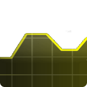

Damian Johnson
Welcome. My name is Damian Johnson, Tor developer behind Nyx and Stem. I'm also a software engineer in Amazon's Builder Tools department, specializing in git infrasture and tooling.
BlogCurious what I've been up to? Check my blog for monthly updates. |
StemLibrary for writing Python applications that use Tor. |
||
|  |
NyxTerminal status monitor for Tor relays. Nyx is written in Python using curses. |
ContactEmail and pgp key. |